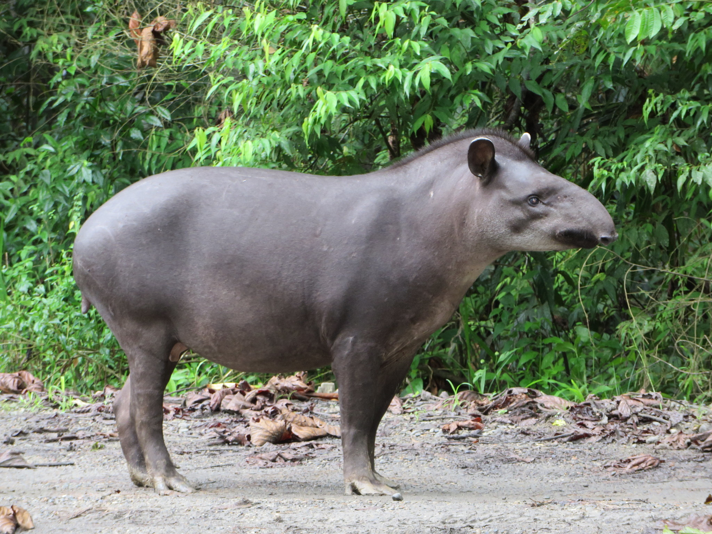

Anta
Tapirus terrestris

A anta (Tapirus terrestris) é o maior mamífero terrestre da América do Sul, com corpo robusto e uma pequena tromba usada para se alimentar de plantas. Solitária e de hábitos noturnos, ela desempenha um papel ecológico vital na dispersão de sementes, ajudando a regenerar florestas. Embora pacífica, pode ser rápida e agressiva se ameaçada. A espécie está vulnerável devido à destruição de seu habitat e à caça ilegal.
Habitat
Vive em florestas tropicais e subtropicais, savanas e áreas pantanosas, sendo comum na Amazônia, Pantanal e Mata Atlântica. Prefere áreas próximas à água, onde pode nadar e se refrescar.
Reprodução
A gestação da anta dura cerca de 13 meses, resultando no nascimento de um único filhote, que nasce com listras e manchas para camuflagem. Esses padrões desaparecem à medida que o filhote cresce, por volta dos 6 meses.
Peso
Pode pesar até 300 kg
Altura
Pode medir cerca de 2 metros de comprimento, com altura média de 1 metro.

Curiosidade
Apesar de sua aparência robusta, a anta é excelente nadadora e mergulhadora, usando a água como refúgio para escapar de predadores e para se alimentar de plantas aquáticas.

Os texto inspirados são dos sites
Toda Matéria, Mundo ecologia e Portal Amazônia.